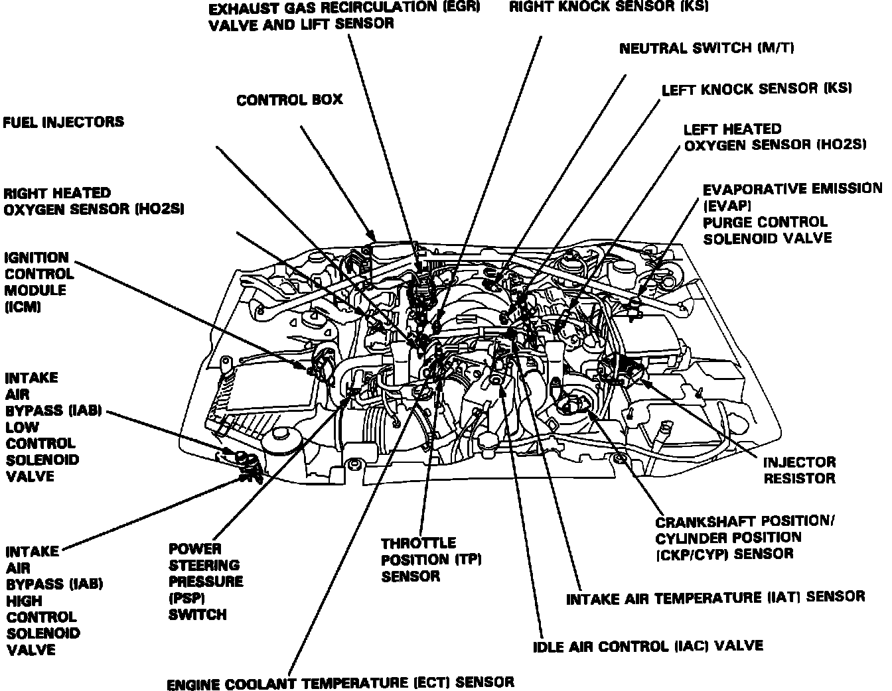

Operation CHARM
: Car repair manuals for everyone.
Home
>>
Acura
>>
1993
>>
Legend Coupe V6-3206cc 3.2L SOHC FI
>>
Repair and Diagnosis
>>
Powertrain Management
>>
Fuel Delivery and Air Induction
>>
Fuel Injector
>>
Fuel Injector Resistor
>>
Locations
Fuel Injector Resistor: Locations
Component Location - Engine Compartment:
